Apontamento de Produção
Nesta janela são realizados os apontamentos de tempo de produção.
Para acessar essa tela pode utilizar as opções:
Através do menu Produção -> Apontamentos -> Apontamento de Produção;
Através do Terminal de Apontamentos (Iniciar Produção e Parar Produção);
Através do botão direito na Ordem de Produção liberada.

Os apontamentos são criados por operação de cada ordem de produção. Para adicionar um novo registro de apontamento, é preciso que o usuário informe o Nº da OP e a operação.
Caso o usuário tente adicionar o apontamento de produção sem informar uma ordem de produção, a seguinte mensagem será exibida:
{kind=link}
BR One :: Informe um valor para o campo ‘N° Ordem de produção’
Caso o usuário tente adicionar o apontamento de produção sem informar uma operação, a seguinte mensagem será exibida:
{kind=link}
BR One :: Informe um valor para o campo ‘Operação’
Caso o usuário tente adicionar o apontamento de produção com o recurso inativo, a seguinte mensagem será exibida:
{kind=link}
BR One :: Recurso “Desing computer” está com status “inativo”. Para poder liberar uma OP, todos os recursos devem estar com status “Ativo”.(Linha2)
Para realizar um apontamento de horas, basta selecionar o recurso da lista e pressionar o botão destacado na imagem abaixo:

O recurso será copiado para as linhas de baixo, onde é possível especificar o tempo, a quantidade do recurso e o status que aquele recurso se encontra.

Quando o recurso apontado for do tipo Mão-de-obra, e não tiver um operador informado na linha, a seguinte mensagem será exibida:
{kind=link}
BR One :: Para o recurso ‘Mão de obra’, deve ser informado um Operador.
Caso o parâmetro “Permitir apontamentos simultâneos de um recurso em uma mesma OP.” das configurações de produção estiver desmarcado e o usuário tentar inserir um segundo apontamento de tempo com o primeiro pendente (data e hora final sem preencher), a seguinte mensagem será exibida:
{kind=link}
BR One :: Recurso ‘x’ possui apontamento aberto. Para iniciar um novo apontamento, é preciso encerrar os existentes. Nº OP: xxx, Seq. Operação: xx, Operação: xxxxxxx
Caso o campo “Peças boas” ou “Refugo” seja preenchido, porém, os campos Data final e Hora final não estejam preenchidos, a seguinte mensagem será exibida:
{kind=link}
BR One :: Os campos ‘Data final’ e ‘Hora final’ devem estar preenchidos para informar o apontamento de ‘Peças boas’ e ‘Refugo’.
Não poderão ser apontados recursos no mesmo horário de qualquer outro recurso que possua apontamento, desde que seu tempo seja maior que “00:00”.
O BR One não realiza a validação dos apontamentos de produção onde o campo “Tempo” é igual a “00:00”, portanto, o add-on permite realizar apontamentos de produção com data e tempo inicial igual a data e tempo final, pois nesse cenário o tempo será igual “00:00”, conforme demonstra imagem abaixo:
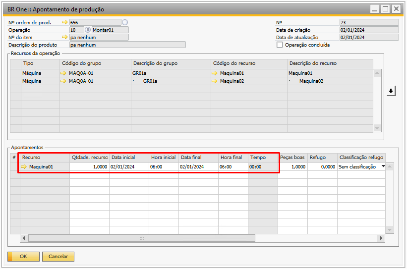{kind=link}
Utilizando o princípio acima, é possível também realizar apontamentos utilizando o mesmo recurso, data e tempo inicial e data e tempo final em apontamentos de produção diferentes, segue print:
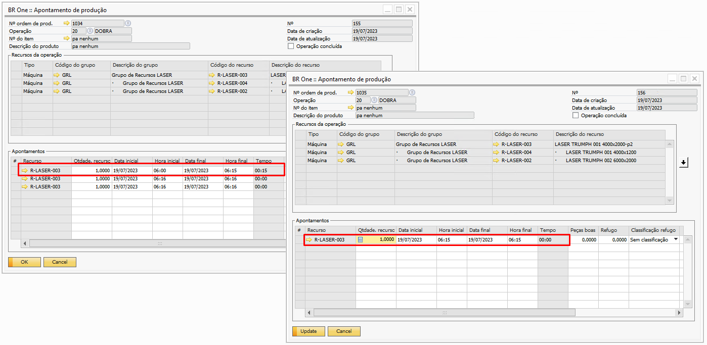{kind=link}
Segue abaixo alguns exemplos de apontamentos de produção possíveis realizar quando o mesmo possui tempo igual a “00:00”:
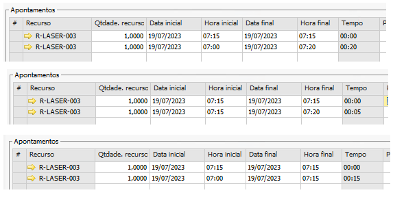{kind=link}
Por outro lado, para quando o “Tempo” de um apontamento for maior que “00:00”, há validações que impedem a adição do apontamento conforme veremos abaixo.
Exemplo:
Se um recurso X for apontado com data de início 05/07/2020 às 06:00 e a data final 05/07/2020 às 09:00, nenhum outro apontamento para o mesmo recurso com hora inicial ou final poderá ser feito dentro desse intervalo, só a partir das 09:01 ou anterior às 06:00.
Caso o usuário tente inserir um recurso sobrescrevendo um já apontado, a seguinte mensagem será exibida, indicando a linha do apontamento que precisa ser alterada e o nº do apontamento que já existe:
{kind=link}
BR One :: Valor da data/hora de início da linha x, invade o intervalo de tempo do apontamento nº xx da linha x.
Não poderão ser apontados recursos com data inicial e final com data futura (data e hora maior que a data e hora atual).
Se a máquina, mão de obra ou ferramenta da OP tiverem um recurso que tenha grupo de recursos alternativos e a flag “Permitir edição após liberação” estiver marcada, será permitido fazer apontamento de tempo para os recursos do grupo alternativo.
Exemplo:
O grupo de recursos FER-01 tem como grupo de recursos alternativos o grupo FER-02.
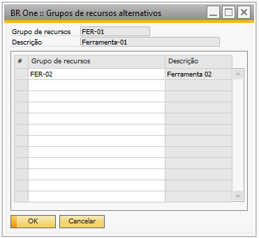{kind=link}
A Ordem de produção (OP) 538 na sequência de operação 10 tem a ferramenta FER-01 com o recurso Ferramenta01 selecionado para ela.
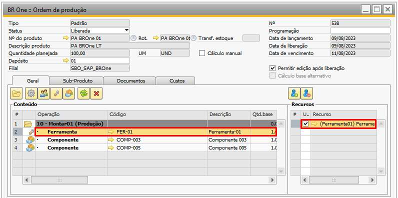{kind=link}
Na tela de “BR One :: Apontamento de produção”, aparecerão os dois grupos, o selecionado na máquina e o grupo de recursos alternativos.
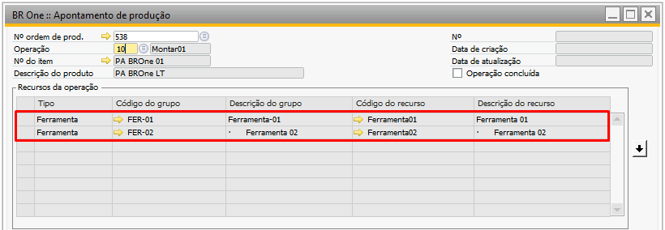{kind=link}
Podem ser apontadas horas para qualquer um dos dois grupos de recursos. Se o usuário selecionar um grupo de recursos que esteja cancelado na OP e clicar na seta para fazer um apontamento para ele, a seguinte mensagem será exibida:
{kind=link}
BR One :: O grupo de recursos ‘x’ está cancelado na OP. Selecione recursos dos grupos alternativos.
Se na Ordem de produção (OP) a flag “Permitir edição após liberação” estiver desmarcado, aparecerá apenas o recurso selecionado para a máquina. O grupo de recursos alternativos apenas aparecerá se a flag estiver marcada.
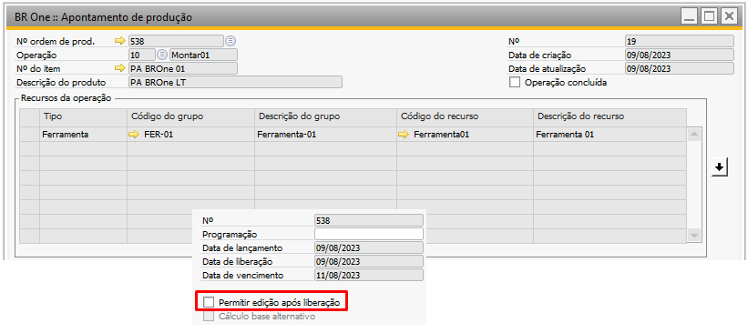{kind=link}
Caso o usuário insira uma data que esteja dentro de um período contábil já encerrado, a seguinte mensagem será exibida:
{kind=link}
BR One :: Valor da data/hora de início inválido. Tentativa de apontamento dentro de um período contábil já encerrado. (Fechamento de custo contábil)
Caso o usuário tente excluir uma linha que já tenha sido contabilizada no fechamento de custos, a seguinte mensagem será exibida:
{kind=link}
BR One :: Linha já contabilizada no fechamento de custos.
Na tela “BR One :: Apontamento de produção”, foi criado o campo “Operação concluída” para identificar se o apontamento está concluído. Conforme imagem:
{kind=link}
O processo possui duas autorizações que permitem concluir ou reabrir as operações, para usuários sem autorização, ele estará bloqueado para alteração.
Permite concluir operação:
Essa autorização permite apenas concluir a operação. Caso o usuário tente reabrir algum apontamento com essa autorização, a seguinte mensagem será exibida:

BR One :: Usuário sem autorização para reabrir apontamentos concluídos.
Permite reabrir operação concluída:
Essa autorização permite apenas reabrir a operação. Caso o usuário tente concluir algum apontamento com essa autorização, a seguinte mensagem será exibida:

BR One :: Usuário sem autorização para concluir apontamentos.
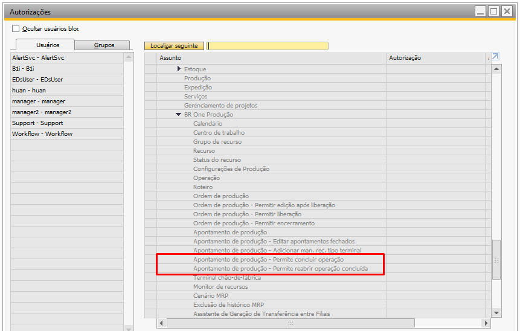{kind=link}
Se nenhuma autorização estiver marcada, o campo estará bloqueado para edição e apenas será atualizado automaticamente pelo processo.
A conclusão do apontamento será realizada quando todos os recursos da operação estiverem apontados e a quantidade concluída dos recursos somada seja maior ou igual à quantidade planejada da Ordem de produção. Então, ao atualizar o apontamento, será exibida a seguinte mensagem:
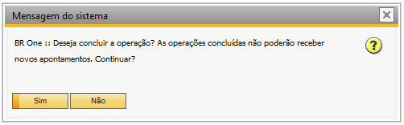{kind=link}
BR One :: Deseja concluir a operação? As operações concluídas não poderão receber novos apontamentos. Continuar?
Caso seja selecionado “Sim”, o campo “Operação concluída” atualizado e marcado, indicando que o concluiu a operação.
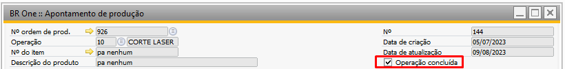{kind=link}
Se o usuário tiver autorização para marcar a flag, ao marcá-la, a seguinte mensagem de confirmação será exibida:
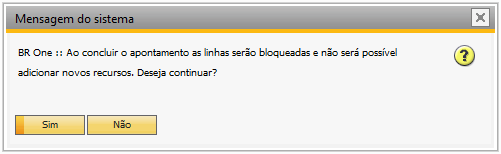{kind=link}
BR One :: Ao concluir o apontamento as linhas serão bloqueadas e não será possível adicionar novos recursos. Deseja continuar?
Após a flag ser marcada, a grid Apontamentos será bloqueada para edição e não será possível inserir novos apontamentos e nem apagar linhas já existentes.

Caso o usuário tente adicionar apontamentos com a operação concluída, a seguinte mensagem será exibida:
{kind=link}
BR One :: Com o apontamento concluído é impossível adicionar recursos.
Caso o usuário tente excluir linhas de apontamentos com a operação concluída, a seguinte mensagem será exibida:

BR One :: Com o apontamento já concluído é impossível eliminar a linha.
Caso o usuário tente atualizar um apontamento com alguma linha incompleta, faltando a data e hora a seguinte mensagem será exibida:
{kind=link}
BR One :: Informe todas as datas para concluir a operação.
Caso o parâmetro “Obrigar a iniciar/parar recursos de uma mesma operação simultaneamente” da tela de “BR One :: Configurações de produção” estiver marcado, as quantidades dos apontamentos serão agrupadas de acordo com a data e hora final.
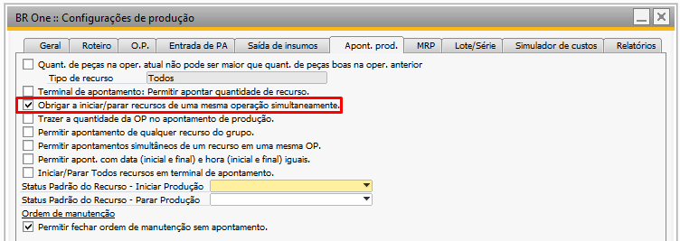{kind=link}
Caso o campo não esteja marcado, será recuperada a soma de todas as peças boas dos apontamentos.
O Apontamento de Produção também pode ser realizado através do “BR One :: Terminal de apontamento” pela opção “Parar produção”.

Ao parar a produção, definir uma quantidade de peças boas superior ou igual à quantidade planejada na OP e selecionar todos os recursos da operação, ao clicar em “Parar”, a mesma mensagem de confirmação será exibida e ao clicar em “Sim”, o apontamento será atualizado com o campo “Operação concluída” marcado.

Caso a operação tenha sido concluída fora do “BR One :: Terminal de apontamento”, no processo de “Iniciar produção”, a operação que foi concluída não será exibida para seleção.

E também para o caso de a operação ser concluída fora do “BR One :: Terminal de apontamento”, a operação não será exibida no processo “Parar produção”.

No modo de busca, podem ser usados 3 parâmetros para localizar o apontamento desejado: Nº OP, Operação e Nº Apontamento.
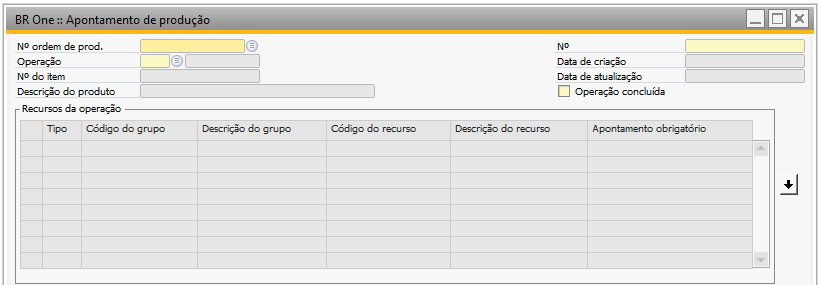{kind=link}
Para excluir um apontamento, clique com o botão direito e na opção Remover. Para remover é necessário que não haja nenhum apontamento de horas na grid “Apontamentos”.
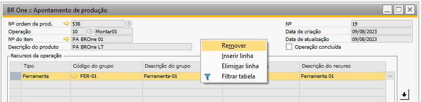{kind=link}
Se houver apontamentos na grid e o usuário clicar em Remover, a seguinte mensagem será exibida:
{kind=link}
BR One :: Impossível remover apontamento pois já existem horas apontadas para esta OP/Operação.
Após clicar em Remover o apontamento de produção, a seguinte mensagem de alerta será exibida:
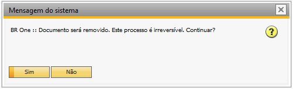{kind=link}
Documento será removido. Este processo é irreversível. Continuar?
Ao clicar em “Sim”, o apontamento de produção será removido. Esta tela possui configurações que podem alterar seu comportamento de acordo com as Configurações de produção - Aba Apont. prod.